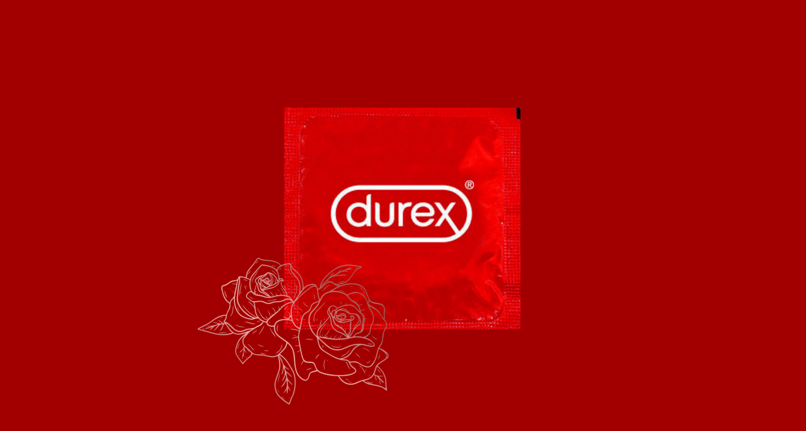

Рекламна академия 2022 лято - DUREX
Екип: Андрей Тошев, Даниел Каменов, Дейвид Досев, Марина Сивенова, Ралица Рангелова
Описание: Създаване на кампания за Дюрекс в колаборация с Виктор Стоянов (Ергенът). Проектът е към Рекламна Академия 2022г ЛЯТО.
Роля: Проучване на пазара и извънредно включване като дизайнер на визиите, което беше успешно благодарение на технически умения и базова познания за работа с фотошоп.
Цел: Awareness – да разберат максимално много хора за новата серия презервативи + Продажби – да стимулираме продажбата на максимално много презервативи от серията.
Бриф: нов кондом, лимитирана серия KIND PLEASURE. 3 презерватива от ново поколение с материал за по-добро/мило усещане с аромат на...роза.
Проблем: Мъжете обичат да правят секс без кондом, а жените са твърде стеснителни да държат на принципа за защитен секс.
Инсайт: Много си падам по някого, но държа на безопасния секс.
Медии: Тиндър, Инстаграм, Фейсбук, Ютюб